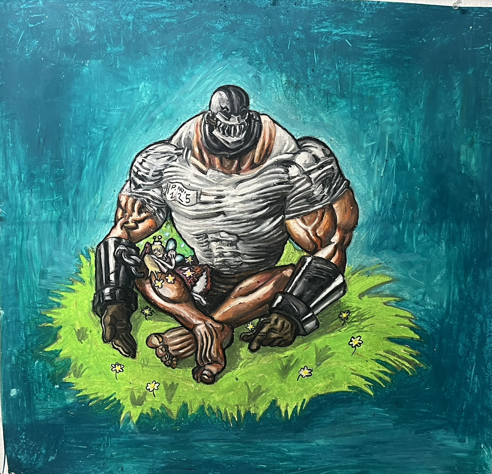
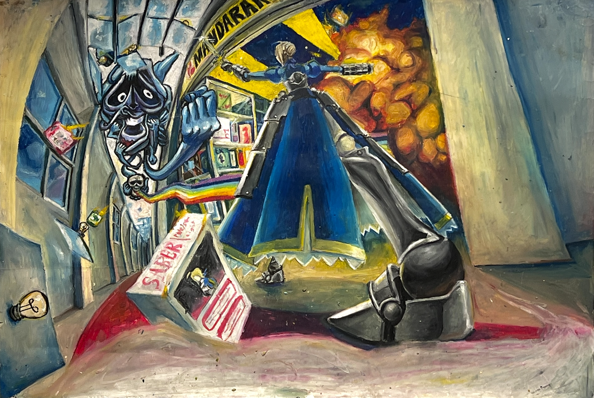
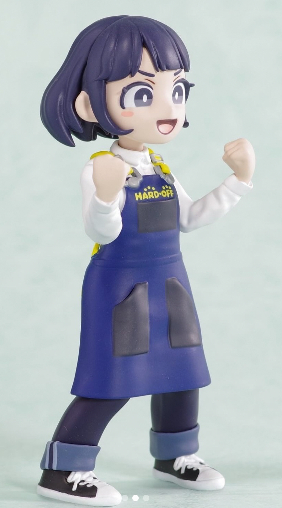
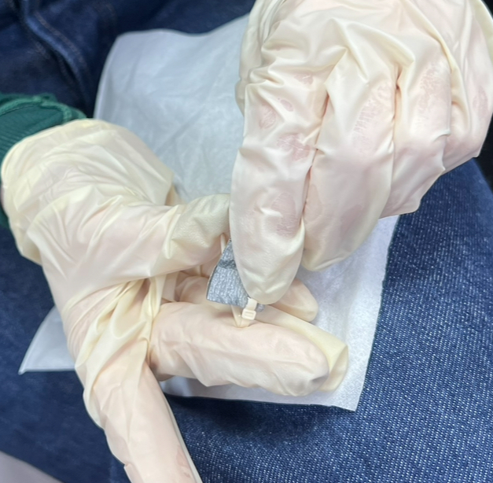
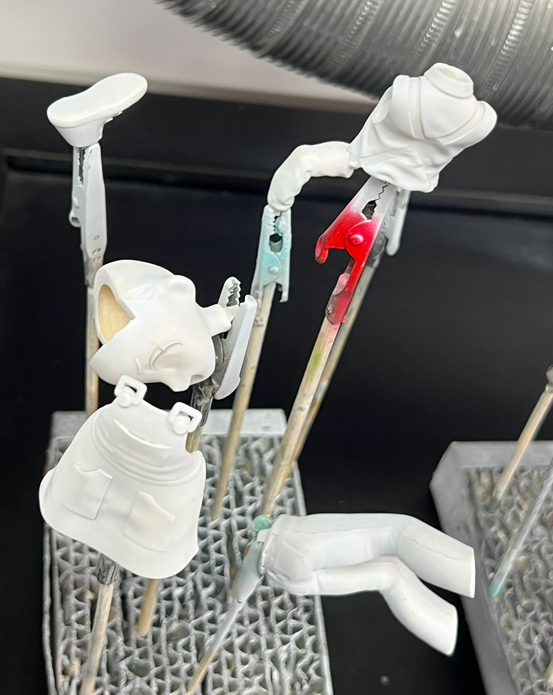
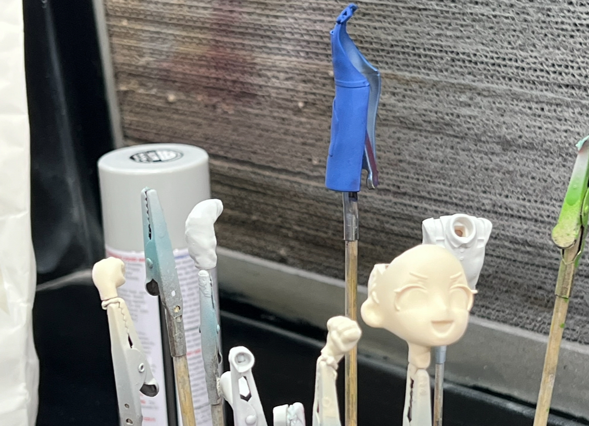

Some of my illustrations




This was my first experience with painting a garage kit figure!
I got this one from WonderFestival 2025 in japan. If you didn't know,
WonderFestival (abbreviated to WonFes) is a yearly convention that is
held in japan where individual circles or artists can sell figurines of
liscensed content with a specified liscense for the day of the convention only.





